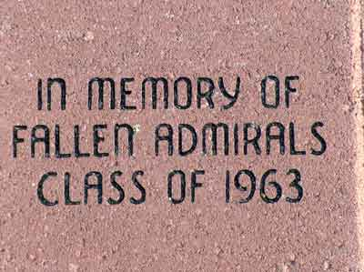

- Mr. J. J. Booker
- Mrs. Elizabeth Bruce
- Miss Evelyn Byrd
- Mr. Reginald E. "Reggie" Byrd
- Miss Ruth Credle
- Mrs. Margaret Edmunds, RN
- Hollis Ergenbright
- Alonzo B. Fane
- Rev. Earl Walter Freeland, Sr
- Miss Cora Mae Fitzgerald
- Miss Mary Gallagher
- Mr. Walter Graham
- Mr. Thomas Woodrow Gray
- Rhoda Hampton
- Mrs. Emmie Marlowe Harlow
- Mr. Wayne Hogan
- Mrs. Ann Jeffers
- Mr. William O. Linzey
- Mrs. Elizabeth O. Morgan
- Mr. A. B. Niemeyer, Jr.
- Mrs. Phoebe Richardson
- Miss Betty Rodes
|
- Flora Ann Rowland
- Mr. William Sease
- Mrs. Carrie G. Spear
- Mrs. Netta Staffon
- Mr. John Stare
- Mrs. Mildred Stenzel
- Mr. Milton Stenzel
- Mrs. Vallie Trent
- Mr. Oral Ware
- Miss Phoebe Weaver
- Miss Barbara West
- Mrs. Jayne C. Wilkinson
- Mr. John J. Wulzer, Jr
- Coach Mac Eure
- Coach Russ Moon
- Coach Jack Thomas
- Coach and Mrs. Larry Weldon
- Coach Jack Veazie
| |
Class Links...
Classes of the 1930's
Classes of the 1940's
Classes of the 1950's
Classes of the 1960's
Classes of the 1970's
Classes of the 1980's
Classes of the 1990's
Classes of the 1930's
The Class of '30
- Priscilla H. Morgan (Hines)
|
| |
The Class of '32
The Class of '35
Classes of the 1940's
The Class of '40
- Durward (Dinky) Barkley
- Ingvar Torsten Liljegren
|
| |
The Class of '41
- Geraldine Barrow Cuthriell
- Larry B.Moore
|
| |
The Class of '42
- Mary Armistead
- Catherine Atkins
- Bertram Balzold
- Shirley Casteen
- Elizabeth Coshatt
- Cassie Dibble
- Wade Foster
- Margaret Gardner
- William Gardner
|
- Thomas Hathaway
- William Lane
- Ruth Shaffer
- Joe Soule
- Norma Smith
- Clarence Taylor
- Marjorie Taylor
- Ora Wheatley
|
| |
The Class of '43
- Luverne Awtry
- Betty Beard Lewis
- Francis Bell Bene
- Doris Byers
- Frances Chase
- Jeannete Cooper
- Walter Comer
- George Cunningham
- Nick Cutchin
- Robert Daniels
- Mary Virginia Dover
- Juanita Dycus
- Charles Gilmore
- Margarette Green
- Billy Hathaway
- Betty Howard
|
- Walter B. Lohman, Jr.
- John Lunsden
- Bud Moorehead
- Dan Paris
- Barbara Ann Rock
- Evelyn Runyon Bonner
- Colleen Shea
- George Sigmon
- Martha Simpson
- Marjorie Tyler
- Ivan Vrendenberg
- Elbert Williams
- Frank Wilson
- Carlton Wright
- Ethel Wright
|
| |
The Class of '44
- Betty Babcock
- Marilyn Barrow Orlando
- Jake Cutchins
- Muriel Dibble
- Howard Flemings
- Billie Dove Forrest
- Stanley Grimes
- Linwood Heely
- Rodney Humphrey
- Doris James
- James Jenkins
- Sylvia Johnson
- Gerald Karako
- Jeanette Karako Frye
- William Koontz
|
- Robert Luke
- Paul Martin
- Mac McCain
- Leslie Morgan
- Tom Morgan
- George Mutter
- Richard Payne
- Irene Payne
- Martha Reid
- Paul Rish
- Robert Taylor
- Mollie Wasley
- Ann Wilburn
- Jean Woodard
- Dorothy Wright
|
| |
The Class of '45
- Vilma Bargenstock
- Norma Bass
- Mary Batten
- Lou Bourdon
- Edgar Britt
- Gene Bushnell
- Wilson Chapman
- Irwin Christian
- Ila Collins
- Margaret Creecy
- Warren Cunningham
- Lottie Mae Derby
- Shirley Dycus
- William Edwards
- Shirley Eller
- Phyllis Harrington
- Pat Hoffman
|
- Dorothy Howell
- Sue Hopewell
- Louise Martin
- James Monahan, Jr.
- James Moore
- Alex Oliver
- Rose Lee Porter
- Mavis Carolyn Russell Powell
- Betty Sclater
- Wharton Simons
- Lucille "Cookie" Spencer
- Harold Stephenson
- Betty Tackett
- Walter Temples
- Melanie Turin
- Earl Williams
|
| |
The Class of '46
- Mary E. Davis Slade
- Louise Powell Coleman
|
| |
|
The Class of '47
- Martha Olivia Armistead
- Phyllis Bragg Nyborg
- John Franklin "Jack" Perkins
|
|
|
|
The Class of '49
- Richard C. Butler
- Margaret A. Hunsucker Ducharme
- David T. Forrest, Jr.
- William D. Harbert
|
|
|
Classes of the 1950's
The Class of '50
- Clovis C. "Buck" Coffman
- Sylvia Evans Balzer
- Raymond Franklin Boggs ( Ray)
- Mary Ruth FENTRESS Smith
- Wesley Lafayette Goodrich Jr.
- George "Jack" Kahler
- Donald O. Lankford
- Georgia "Kate" McNemar
- Henry Joseph Mounie, Jr.
- Charles R."Chuck" Sykes, Jr.
- Paris Thompson
|
| |
The Class of '51
- Nick Cardamone
- Madelyn Darley Manser
- Wilbur “Red” Johnson
- Margaret Resnick Dean
|
| |
The Class of '52
- Claude D. Banks
- George W. "Billy" Barnes
- Barbara Barrett Herring
- Harry L. Bartlett
- William (Billy) Boyd
- Barry Bridgeman
- Richard "Dick" Caffee
- Ralph Crawson
- Syble Doughtie
- Ella Mae Gillespie
- Garnet Griffin Cummins
- Jimmy Early
- John Hains
- Clarence Heitz
- Martha Kilpatrick Raymond
- John M. Koziol
- Miriam Lewis Rogers
- Doris Lippard Parker
|
- Stephen Linker
- Jane Matthews Tickle
- Patricia (Pat) Meeker Shotzberger
- Rev. Bob R. Melvin
- Jacquelyn Morris Raynor
- Art Newcomb
- Lena Newsome Odom
- Charles E. Perkins
- Aubrey Ramsey
- Ann Ripley
- Constance Scaff Flint
- George Senn
- Deloris "Dee" Townsend Vick
- Rodney Turner
- Jeff Wimberley
- Betty Wiggs Andrews
- Robert Aultman
|
| |
|
The Class of '53
- Robert Aydlette
- Jacqueline Rae Bogan
- Georgia(Bullard)Gibbs
- Helen Marie (Clark) Snurr
- Wallace Coggins
- Robert Cowart
- Eugene Davis
- George Edgar Derby, Jr.
- Marvin Edwards
- Joyce Evans
- Edith Anne Goodrich Mitchell
- Maurice Griffin
- Bernadine Hawkins Waddell
- Ruth Hazelton
- Edward "Sonny" Honeycutt
- Virginia Hopkins Bass
- William Hopson
- Wilbur Johnson
|
- Howard Kirk
- Billye Lily Mercer
- George Morgan
- James Mounie
- Ann Murphy Donaldson
- Nancy Owens Cullifer
- Robert C. Parker
- Kenneth Parsons
- James Reneau
- Murray Shackelford
- Betty Lee Smith Alexander
- Robert Lee Spear
- Vestal Stewart
- Floyd Williford
- Janet Winston
- James Woods
| |
|
The Class of '54
- Barbara Allred Wilson
- Bobby Aydlette
- Marye Bradley
- Mary Callis
- Gailya Chambers Johnson
- Bobby Clark
- James Roger Clark
- George F. Combs
- Frances Creamer Newcomb
- Sylvia Crisp Boughnou
- Larry Curles
- Oscar Gerald
- LtCol Robert Roy Greenwood, Jr.
- Bill Gregory, Jr.
- Kenneth Gregory
- Bunny Harmon
- Fred Higgins
|
- Helen Hollis Morris
- Robert "Bob" Hudson
- Judy Karsch Ogden
- Hope Laylor Carmines
- Jeanette Martin Jones
- Bobby Oliver
- Lois Reily Cullen
- Mary Jo Reneau Chapman
- Purity McInnis Pitts
- Phyllis Sayre Powell
- Derl Sloan
- Charles Wagoner
- Shirley Warner Bland
- Charles Watson
- Luanne Whitener Carlson
- Monte Willis
|
| |
The Class of '55
- Stacey Adams
- Robert B. Armistead, Jr.
- Nellie Armstrong Heavrin
- G. Malone Buck, Jr.
- Joseph Bullock
- William Cartwright
- Betty Christopher Henderson
- Betty Crawson Chase
- Shirley Criddle Brasington
- Paul L. Donaldson
- Charles R. Edwards
- Donald Fisher
- Gail Fitch Riccio
- Bobby Foxwell
- Raenel Gainer Forsythe
- Elsie Griffin Stokes
- James (Yogi) Hardin
- Patricia Sue Harvey Winstead
- William F. Hicks
- Myrna Hirst Rowe
- Martha Hornik Meekins
- Jack B. Hudson
- Wayne K. Hull
- Margaret Jolley Judge
- Sandra Jones Alexander
- James R. "J.R." Keeney
|
- Alida Lapham Williams
- Homer Lyttle
- Harry Marshall
- Harry McGinn
- George McPherson
- Margaret Mitchell Harlan
- Daphne Morgan Peiffer
- Dana R. Reaser
- John D. Revels
- Janet Richardson Deans
- Pat Rose Oast
- Hugh Slaydon, Jr.
- Walter Smith
- Helen Snoddy Makham
- Peggy Sparrow
- Matthew H. Stalls
- Joyce Stancil Banks
- John F. Vance, Jr.
- Joan Waggoner Gibson
- Marsha Whitehurst Jones
- Logan Whitlock
- Margaret Ann "Jay" Jordan
- Kenneth Ladd
| |
|
The Class of '56
- Robert Ashby
- Betty Barganier Kirby
- Paul Doug Chin
- Dorothy Hoffler
- Richard Fiske
- Fred "Pat" Foster
- William M. "Bill" Grimmer
- Faye Hooker Parrish
- Mary Elizabeth Hudson Potter
- Melvin Jones
- Connie LaMore Owens
- Mary Lou Liverman
- Eugene Lopez
- Peggy McCelland
- Margie Melson
- Jerry K. Morrison
- William Oliver
|
- Ben (Red) Parsons
- John Piner
- Joyce Powell
- Jimmy Pratt
- Wayne Ramsey
- George William "Bill" Robertson
- B'Ann Ryder
- Betty Sadler
- Charles Speegle
- Barbara Thompson
- Billy Twigg
- Myrna White
- Jane Williams
- Rose Ann Wright
| |
|
The Class of '57
- David Allison
- Jack Allison
- Henry F. Asble Jr.
- William Thomas Aydlette
- Patricia Brinkley
- Gracie Pipkin Davenport Hooper
- Emma Jean Dorn
- Elizabeth "Libby" Elder
- Oliver W. Hawkins
- Paul Marsh Harbert
- Nancy Belle Hemp
- Edward McTyre
- Audri Odom
|
- Margaret Fay Plesants
- Garland D. Presson
- Flora Ann Roland
- Eugene C. Shelton
- Barbara Smith
- Lennie William Wagner
- Roy T. Walker
- Jerry G. Ward
- Thomas T. Whaley
- Frank Whitlock
- Patricia Young Cooke
| |
|
| |
The Class of '58
- Priscilla Yvonne Ashe
- Roger Ashworth
- Ira Cecil Barber
- Henry Thomas Cooper
- Ralph Warren Early
- Jessie Gillikin
- Anne Linkous
- George Meiggs
- Charles Lawrence Novack
|
- Charles Allen Perdue
- George Plum
- Nancy Hope Rowe
- Claudia Simmons
- Bettie W. Sult
- Donna Rae Tilley
- Otway Turner
- William Thomas Vann
- Emmet H. Walke
| |
|
The Class of '59
- Paul Louis Billy
- Brad Boynton
- Thomas Cockes
- Gayle Donaldson Hilla
- Linda Gardner Edwards-Morales
- Brenda Lou Hay
- Ivor Jones
- Duane McDaniel
|
- Floyd Parker
- Sue Purkey
- Floyd Simpson
- Ken Shedrick
- Sandra Stafford Clark
- Shirley Waite
- Johnny Underwood
| |
|
Classes of the 1960's
The Class of '60
- Gloria Atkins
- Helen Benton
- Barbara Berryhill
- Harriet Cohen
- Richard Corp
- Fredrick John Galuska
- Nancy Liddle
- Lynn Tilley
- Joe DeLucia
- Billy Dillahay
- Sam Gay
- Leah Griffin Brooks
- Wayne Hathaway
- Wade Kilpatrick
- Walter Loulies
|
- Tony Myers
- James G. "Jim" "Buddy" Overcash
- Carl Overstreet
- Donald Patton
- Chan Poppell
- Carroll Raynor
- Arnold Rodriquez
- Stephen Root
- Charles Simmons
- Linda Ward Stallings Lilley
- Dickie Vick
- Thomas Whitt
- Maynard Williams
- Larry Woods
- Tommy Woody
| |
|
The Class of '61
- Murray Roberts Bridgeman
- Bill Bright
- Fred Burch
- Sandra Carneal Barham
- Samuel R. Dunston
- Joanie Ferguson Hurst Walter
- Earl Walter Freeland Jr
- Ronald Gayle
- Rev. Gordon Grimes
- Susan Hibble
- Jimmy Hill
- Mary Lindsey Hoffler Hester
- Clinton Jones
- David Jones
- William Jones
- Virginia Kalruth
- Judy Kasper
- Jane Lane
|
- Robert E. "Bobby" Lee
- Joe Light
- Larry Marchbank
- Phyllis Marlow
- Carolyn Mason Taylor
- Gayle Lee Mayo
- Kay Neal
- Don Nurney
- Tonya Poppell
- Jean Rousey
- Billy Rudd
- Leroy Settle
- Bobby Shaffer
- D. Wayne Silcott
- Robert "Bobby" Snow
- Betty Lou Tyson
- R. C. Walden
- Sonny Walker
- Raye Workman
| |
|
The Class of '62
- Barbara Black
- John Breeding
- Bill Bryant
- William James "Billy" Burnell Jr.
- Gary Corns
- Bill Dean
- Michael Eason
- Robert Gilmer
- Robert "Reid" Harrell
- Glenda Hewlett Bracy
- Alice Johnson
- Tommy Jordan
- Randy Lewis
- Chris Martin
- Jerry McHargue
|
- Michael Miller
- Tommy Nolan
- Marion Raynor
- Leonard Reppert
- Clyde Sawyer
- Roy Spears
- Steve Stewart
- Annette Strickland Bishop
- Delores Swanson
- Donald M. Townsend, Jr.
- Freddie Walker
- Lynn Watson
- Pete Wiggins
- Jimmy Wynn
| |
|
The Class of '63

A donation was made to the Alumni & Friends of Cradock from Dan H.
Brockwell in memory of deceased classmates of The Class of '63:
- Larry Vance Bashford
- Joseph Wayne Boggs
- David Carpenter
- Robert Allen Case
- Carlos Bearnard Cook, Jr.
- Judith Ellen Dodd Culpepper
- Sarah Ferree Dunn
- Joseph Anthony Giarmono
- George Griffin
- Herbie Hale
- Charles Harrison
- Sandra Hayden Taylor
- Andy Johnston
- Patricia Ann (Jones) Henkle
- Brenda Lou Keel
- Mary Ann Klugh
- Earl Raymond Lee, Jr.
|
- Sandra McClellan
- Linda Miller Wood
- Betty Ruth Mills Burchett
- Dorothy New Hall
- Robert Parrish
- James Shelton Raynor
- Pat Riggs
- Fred Snodgrass
- Elizabeth Kaye Spencer Clark
- Ronald Lee Spivey
- Johnny Taylor
- Clarence A. (Sonny) Walker
- Phyllis White Eanes
- Mike Wise
- Danny Ray Wood
| |
|
The Class of '64
|
|
- David Nelson
- Joseph Samuel "Smokey" Porter, Jr.
- Connie Poulter Weadon
- Maurice Reavis
- Joe Spivey
- Renee Vann Whiddon
- David Watson
| |
|
The Class of '65
- Neal Barnes
- Mike Breeding
- Johnny Butler
- Frances Colebank
- Bruce Doughty
- John Galuska
- Margaret Gartley
- Robert "Bobby" Goins
- Brenda Hoffman Black
- Bruce Keaton
- Bill Leary
- Chester May
- Delores (Janie) Maynard
|
| |
|
The Class of '66
- William Winston Barkley
- Stuart Michael Bender
- Michael Hunt Boothe
- George Russell Britton
- Gordon "Tommy" Cesler, Jr
- Larenda Jean Chambers
- James Michael Collins
- Linda Clark Condon
- Patricia "Trish" Ann Cox
- Charles Kent Fields
- Ronald Eugene Gibson
- Olivia "Libby" Goins Key
- James King
|
- John Letcher Griffey
- Julian Sylvester Hervey
- Robert Bruce Larivee
- Robert Lee Lindsay
- Phillip Anderson Mullen
- Patricia Richardson Hundley
- Diane Saunders Dale
- William Edward Spruill II
- Janice Marie Warren Nyman
- Robert Frances Watson
- Robert Earl Worrell
|
|
|
The Class of '67
- Susan Belding Saunders
- Nelson "Ken/Sonny" Crutchfield
- Steven Larkin Day
|
- Louis Edelstein
- Don Fox
- Sharon McClellan Respess
- Robert F. Richardson, Sr.
|
|
|
The Class of '68
- Raymond "Ray" Leon Hale
- Charles Linwood Ivy
|
- Bill Powell
- Ronnie Snipes
|
| |
|
The Class of '69
- Susan Bailey
- Floyd E. Bass
- Curtis Allison ("Al") Geddie
- Sandra Lynn Lane Campbell
- Julie Maxon
- Judy Kaye (Morgan) Mann
- Deborah (Debby) Walker Spain
|
| |
|
Classes of the 1970's
|
The Class of '70
- Joseph (Joe) B. Herring
- Paul Grant Kitchen
- Michael Murray
- David Ripley
- Edward B. Williams, IV
|
| |
|
The Class of '71
- Alice DeArmond
- Andrei Von Blackwell
- Frank Gibson
- Freddie Murphy
|
|
|
|
The Class of '72
- Renee Baggett Griffey
- Burlene Branch
- Susan Bunting Yost
- Mary Jo Coley Kirby
- Charlie Faust
- Kenny Gunnell
|
- John Luther Prather
- Lance Pugh
- Reginald Robinson
- Tommy Weaver
- Keith Williamson
- Robert Wooten
|
|
|
The Class of '73
- Richard Barnette
- Stephen Ray Harmon
- Shelia A. Johnston Bowman
- Mike Knight
- Billy Minnix
- George Timothy Murray
|
|
|
|
The Class of '74
- Andrea (Jenny) Jones
- William "Ricky" Klugh
- Steve Marshburn
|
- Ruby Priest
- Reginald B. Saunders
- Anthony Bellamy Smith
|
|
|
The Class of '75
- Patricia Bathe Carpenter
- Barry Culpepper
- Diana Lynn Goodrich McCants
|
- Jimbo Smith
- Natalie Umphlette
|
|
|
The Class of '76
|
The Class of '77
- Richard Eric Benton
- Timothy Detrick
- Gregory Scott Hogg
|
| |
|
The Class of '78
- Douglas Lynn Edwards
- John Fish
|
| |
|
The Class of '79
- James Ayers
- Constance Jones Thompson
- Steve Newton
|
| |
|
Classes of the 1980's
|
The Class of '80
|
The Class of '81
- Pamela Kay Foley
- Steven R. Wiggs
- Kenneth Woods
|
|
|
The Class of '82
- Michael Penland
- Patrick Mark Watley
|
| |
|
The Class of '84
- Amber Kellam
- Anthony Newby
|
| |
|
The Class of '86
- Carr Evans
- Lisa Greer
- Patrick Weaver
|
|
The Class of '87
- Princes Green
- Donald Mullen
- Andre' Thorne
|
|
The Class of '88
- Jodi Barnett
- Larry Harrell
|
|
The Class of '89
Classes of the 1990's
The Class of '91
The Class of '92
- Shawn D. Boone
- Jerrom Blow
|
The Class of '93
All information on this page has been provided by fellow classmates. If this page contains an error, please notify me immediately at the above address. |
{kind=link}